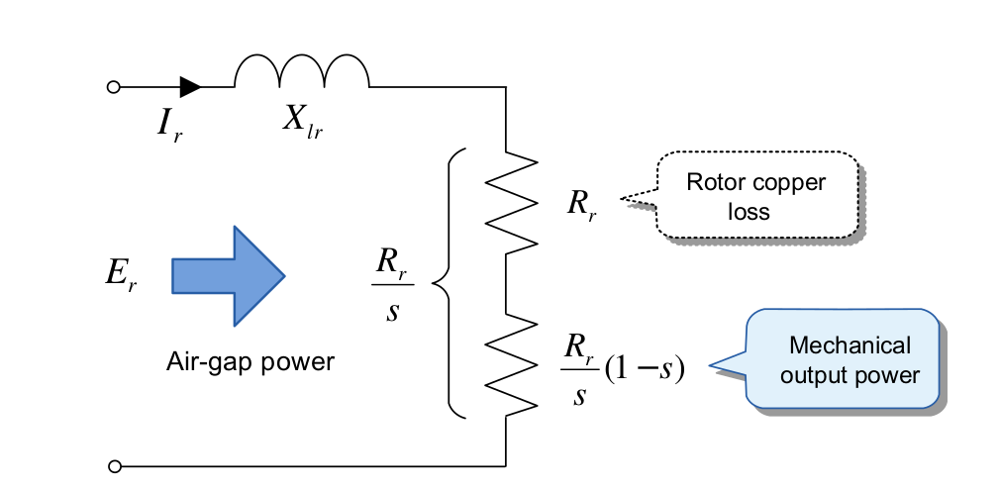
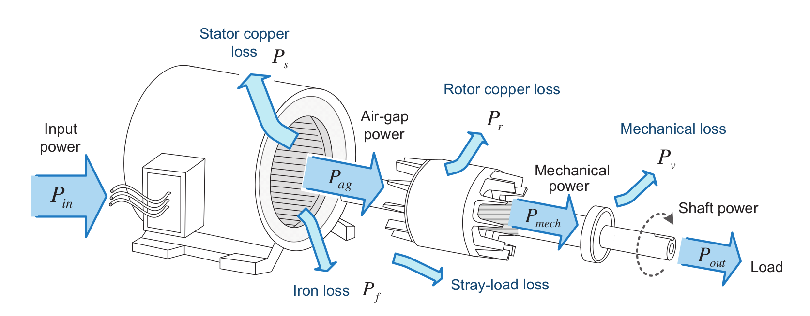

class: center, middle # EE-362 ELECTROMECHANICAL ENERGY CONVERSION-II # Power and Torque in Induction Machines ## Ozan Keysan [keysan.me](http://keysan.me) Office: C-113 <span class="meta">•</span> Tel: 210 7586 --- # Equivalent Circuit of Induction Motors <img src="http://myelectrical.com/Portals/0/SunBlogNuke/2/WindowsLiveWriter/InductionMotorEquivalentCircuit_D7EF/Induction%20Motor%20Equivalent%20Circuit%20-%20Form%202_thumb.png" alt="Drawing" style="width: 800px;"/> ## The rotor can be referred to the stator side --- # Equivalent Circuit with Referred Rotor <img src="http://myelectrical.com/Portals/0/SunBlogNuke/2/WindowsLiveWriter/InductionMotorEquivalentCircuit_D7EF/Induction%20Motor%20Equivalent%20Circuit%20-%20Simplified_thumb.png" alt="Drawing" style="width: 700px;"/> --- # Power Flow in Induction Motors -- - ## Total Power: \\(\quad P\_{in}=3V\_{1} I\_{1} cos(\theta)\\) -- - ## Stator Copper Loss: \\(\quad P\_{cu1}=3 I\_{1}^2 r\_1\\) -- - ## Core Loss: \\(\quad P\_{c}=3 \dfrac{E\_1^2}{R\_c} \approxeq 3 \dfrac{V\_1^2}{R\_c}\\) --- # Power Flow in Induction Motors ## Electrical Power Transferred to Rotor? -- - ## Air-gap Power: \\( P\_{ag} = P\_{in}-P\_{cu1}-P\_{c} \\) ## or -- ## \\(\quad P\_{ag} = 3 I\_{2}'^2 \dfrac{r'\_2}{s} \\) --- # Power Flow in Induction Motors ### Not all the air-gap power dissipates as heat, most of it is converted to mechanical power -- ### The equivalent circuit (\\(\dfrac{r'\_2}{s} \\)) can be separated into two components: ### \\(\dfrac{r'\_2}{s} = r'\_2 + \dfrac{1-s}{s}r'\_2 \\) ###\\( P\_{ag} = P\_{cu2}+P\_{mech} \\) --- ## Rotor Side Equivalent Circuit  ### (\\(\dfrac{r'\_2}{s}\\)) is separated into two components --- # Equivalent Circuit of Induction Motors <img src="https://raw.githubusercontent.com/ozank/ozank.github.io/master/presentations/images/induction_motor_power_flow.png" alt="Drawing" style="width: 700px;"/> --- # Mechanical Power ## Gap Power: \\(\quad P\_{ag} = 3 I\_{2}'^2 \dfrac{r'\_2}{s} \\) ## Rotor Copper Loss: \\(\quad P\_{cu2}=3 I\_1^2 r'\_2\\) ## \\( P\_{cu2}\\) can also be expressed in terms of \\( P\_{ag}\\) ## \\( P\_{cu2} = s P\_{ag} \quad \\) --- # Mechanical Power ## Gross Mech. Power = Gap Power - Rotor Copper Loss -- ## Gap Power: \\(\quad P\_{ag} = 3 I\_{2}'^2 \dfrac{r'\_2}{s} \\) ## \\(P\_{mech} = 3 I\_{2}'^2 \dfrac{(1-s)}{s}r'\_2 \\) ## \\( P\_{mech} = (1-s) P\_{ag} \\) --- # Mechanical Power ## Gross mechanical power is the power converted into mechanical form ## Net power is the useful mechanical energy to drive the mechanical load -- ## Net Power = Gross Power - Rotational Losses ## \\(\quad P\_{net} = P\_{mech} - P\_{rot}\\) --- # Power Flow in Induction Motors  <!-- <img src="http://image.slidesharecdn.com/inductionmachines-121207220052-phpapp01/95/induction-machines-33-638.jpg?cb=1354940117" alt="Drawing" style="width: 800px;"/> --> --- # Efficiency # Output Power / Input Power -- # \\(\eta=\dfrac{P\_{out}}{P\_{in}}\\) ## Don't forget the rotational losses! --- # Example ## What is the efficiency of the motor in the last exercise if the rotor is running with a slip of s=0.05? (Assume the parallel branch is moved to the primary side.) --- ## You can download this presentation from: [keysan.me/ee362](http://keysan.me/ee362)